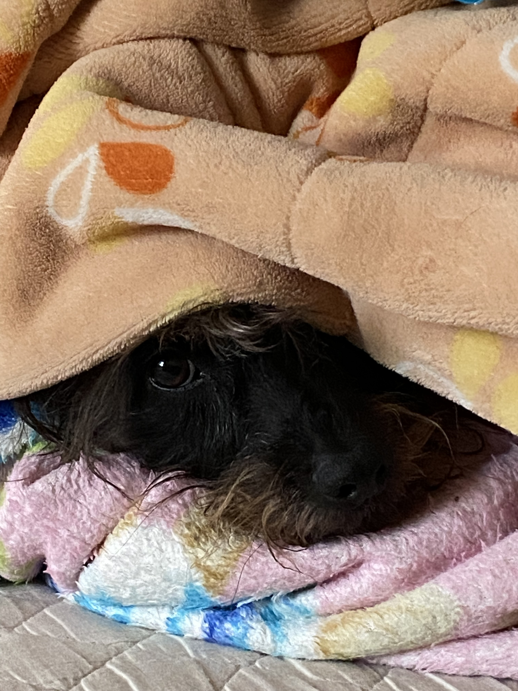
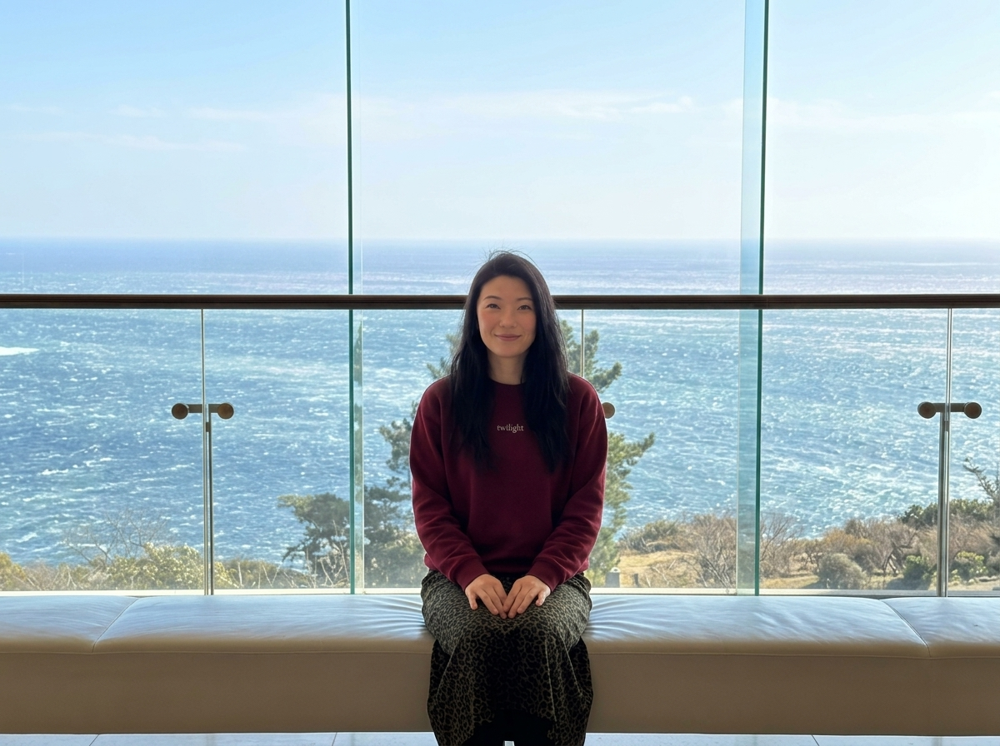

A few snapshots


I'm a Senior Product Designer based in Tokyo, with a background in architecture and urbanism and 5 years of experience designing for complex B2B SaaS platforms.

My architecture training gave me a systems-first perspective — I think in structures, constraints, and flows before I think in screens. That carries directly into how I approach enterprise product design, where the real challenge is rarely visual: it's organizational, informational, and embedded in how people actually work.
Over the past 5 years, I've designed core features for platforms processing millions of fiscal transactions, enterprise document intelligence tools, and supplier networks used by millions of businesses. I work end-to-end: from research and discovery through to interaction design, design systems, and implementation guidance — always in close collaboration with product and engineering.
I help teams face ambiguous, high-stakes problems — bringing structure to uncertainty and translating messy requirements into design decisions grounded in evidence.

Open to full-time product design roles and strategic projects. Based in Tokyo — available globally.